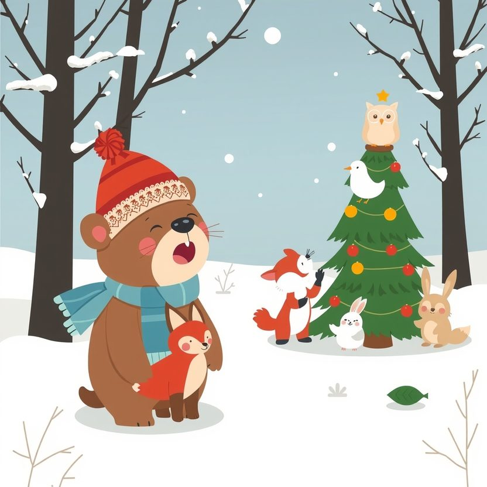

Titistoire › Les Étoiles (3-6 ans)
Nestor et le Noël qu'il ne fallait pas rater
Une histoire de Nestor l'ourson pour parler de : les amis qui pensent à nous.

▶ Écouter et regarder l'histoire
Gratuit, sans inscription : la voix lit, le texte suit mot à mot, les images tournent comme dans un album.
Le texte de l'histoire
Les ours, l'hiver, ça dort. C'est comme ça. Dès les premiers flocons, les paupières de Nestor deviennent lourdes, lourdes, un bâillement énorme lui échappe, et le voilà qui ronfle jusqu'au printemps.
Voilà pourquoi Nestor n'a jamais vu Noël. Jamais. Chaque année, à grands gestes, ses amis lui racontent tout : le sapin qui scintille, les bougies, les chansons, le gâteau à la cannelle.
« Cette année, annonce Nestor en levant la patte, je ne dormirai pas. Je le jure sur mon pot de miel. Je veux voir Noël, moi aussi. »
Pour rester éveillé, il essaie tout. Une poignée de neige dans le cou : brrr, il en frissonne ! Il compte les flocons, il chante à pleins poumons. Et il s'assoupit quand même, tout debout, au beau milieu du refrain.
Rosie le tire par la patte pour lui faire faire le tour de la clairière au galop. Filou lui raconte des blagues. Plume lui pose mille questions. « Nestor ? Nestor ! » « Hein ? Je ne dormais pas, bredouille-t-il. Je réfléchissais les yeux fermés. »
Plus que trois jours avant Noël. Nestor tient bon. Il a les yeux rouges comme des groseilles, il noue son écharpe à l'envers, mais il serre les poings et il tient bon.
Il aide à porter le grand sapin. Dressé sur la pointe des pattes, il accroche les pommes de pin dorées à la cime, tout là-haut, où personne d'autre n'arrive.
Il goûte la pâte du gâteau à la cannelle. Deux fois. Trois fois, pour être sûr. « C'est donc ça, l'odeur de Noël », s'émerveille-t-il, le museau tout barbouillé. Puis il bâille à s'en décrocher la mâchoire.
La veille du grand soir, il s'assoit une minute près du feu qui crépite. Juste une minute. Le temps de se réchauffer les pattes.
« Rrrrron… » Ses amis le secouent comme un prunier. Rosie lui tire l'oreille. Filou claironne dans sa trompette. Plume lui chatouille le nez du bout d'une plume. Peine perdue. Un ours qui dort, c'est une montagne.
« Il va tout rater, se désole Rosie. Quel chagrin il aura ! » Tous les trois contemplent leur gros ami, qui sourit aux anges, le museau encore poudré de cannelle.
« Alors, murmure Plume en levant une aile, si Nestor ne peut pas venir à Noël… »
À trois, ils le hissent sur une luge. Han ! Ils le tirent cahin-caha jusqu'à sa tanière, puis ils le bordent sous trois couvertures. Nestor ne remue pas même une oreille.
Puis c'est Noël. Le sapin étincelle, les bougies dansent, les chansons montent dans la nuit. C'est très beau. Mais à table, il y a une grande chaise vide, et chacun la regarde un peu, du coin de l'œil.
Après le gâteau, Filou se lève. « J'ai une idée. » Rosie bondit à son tour. « J'ai la même. » Plume, elle, noue déjà son écharpe.
Cette nuit-là, à pas de loup, ils se glissent dans la tanière. Près du lit, ils installent un petit sapin. Tout en haut, ils accrochent une étoile. Et sous l'oreiller, ils cachent trois paquets.
Et sur une assiette, ils laissent la plus grosse part du gâteau à la cannelle. Bien enveloppée dans un torchon, pour qu'elle sache attendre.
Dans son sommeil, Nestor remue le bout du nez. « Mmmh… Noël… », marmonne-t-il. Puis il se rendort, tandis que la neige tombe sans bruit sur la forêt.
Un matin, un rayon de soleil lui chatouille l'oreille. Les oiseaux gazouillent. La neige a fondu. Nestor entrouvre un œil… et se dresse d'un bond. « NOËL ! J'ai raté Noël ! »
Une grosse boule lui serre la gorge. Puis il aperçoit le petit sapin. L'étoile. Les trois paquets. Et la part de gâteau, un peu sèche, qui embaume encore la cannelle.
Dans le premier paquet, une écharpe à rayures. Dans le deuxième, un dessin d'eux quatre. Dans le troisième, un réveil énorme, avec un mot griffonné par Filou : « Pour l'année prochaine. »
Nestor sort de sa tanière, le cœur battant. Dans la clairière tapissée de primevères, ses amis l'attendent. Ils ont remis leurs bonnets rouges et rallumé toutes les bougies.
« Joyeux Noël, Nestor ! » Ils entonnent toutes les chansons, un peu faux, sous les arbres en fleurs, et Nestor bat la mesure. C'est le seul Noël du monde où voltigent des papillons.
Nestor savoure sa part de gâteau, les yeux fermés, ses amis blottis contre lui. « Hmm… Alors c'est ça, Noël, murmure-t-il. Je croyais que c'était un jour. Mais c'est des amis. »